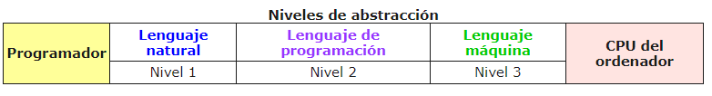
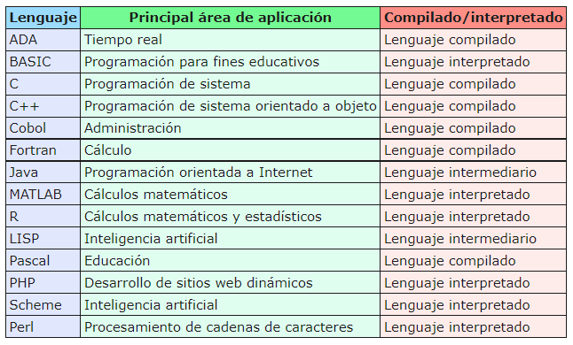

Conociendo los lenguajes de programación...
Un lenguaje de programación es un conjunto de símbolos y caracteres combinados entre sí, de acuerdo con una sintaxis ya definida y respetando unas reglas establecidas para posibilitar la comunicación con la CPU del ordenador.
(dibujo de clase)
Este proceso implica tres niveles de abstracción:

Tipos de lenguajes de programación
La clasificación de los lenguajes de programación no es única, y en este sentido existen varias:
- Lenguajes de alto y bajo nivel.
- Lenguajes interpretados y compilados.
- Lenguajes orientados o no a objetos.
- Lenguajes de propósito científico u otros.
Ejemplos de lenguajes de alto nivel son:
- Java: de alto nivel, de propósito general, orientado a objetos, compilado e independiente de la plataforma o hardware de la máquina.
- R: de alto nivel, de propósito estadístico, orientado a objetos, interpretado e independiente del sistema operativo.
- PHP: de alto nivel, de uso general, para plataformas web, orientado a objetos, interpretado del lado del servidor.
Ejemplos de lenguajes de bajo nivel son:
- Ensamblador: de bajo nivel que implementa una representación simbólica de los códigos de máquina binarios.
- Lenguaje máquina: de bajo nivel, interpretado directamente por el microprocesador.
En la tabla siguiente se muestra una lista de algunos lenguajes según el campo o área de aplicación en que se emplean:
